A soft tape, the right underwear
Measure in the undergarments you plan to wear with the gown, using a soft tailor's tape (never a metal one), and no bulky clothes over the top.
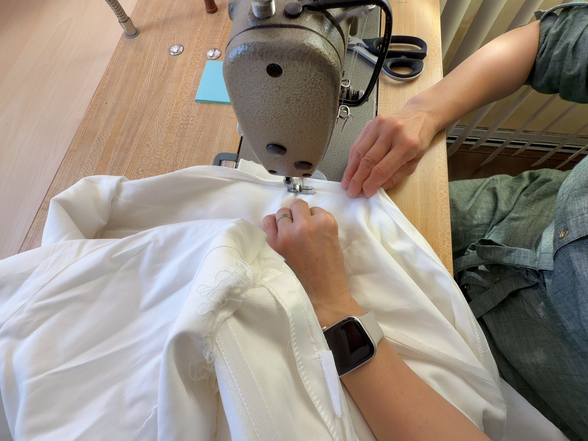
The Measurement Guide
A custom gown, and a good estimate, starts with a handful of honest numbers. Here is exactly how we take each one, so you can measure at home with nothing but a soft tape and a friend.
Measure in the undergarments you plan to wear with the gown, using a soft tailor's tape (never a metal one), and no bulky clothes over the top.
For every "around" measurement, the tape should lie flat on the body and parallel to the floor, with room for a fingertip. If the tape digs in, the gown will too.
A friend keeps the tape straighter than a mirror ever will. Stand naturally and breathe normally. If you book a custom gown, we re-take every measurement in the studio anyway.
Start Here
Seven numbers tell us most of what a gown needs to know about you. Take them in order, and write each one down before moving on.
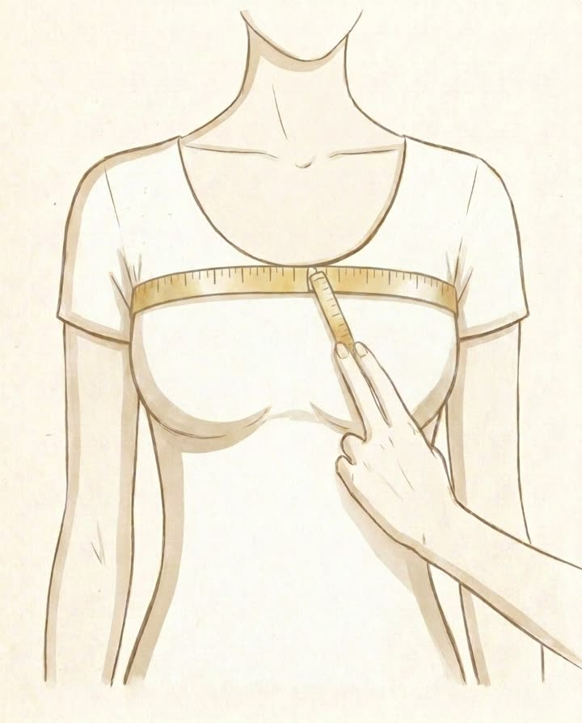
Wrap the tape around your chest above the bust: high under the arms in front, across the shoulder blades behind. Keep it level all the way around.
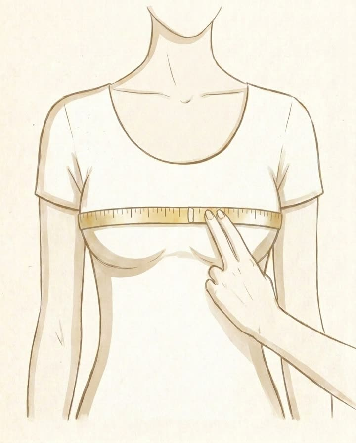
Measure around the very fullest point of the bust, with the tape level and resting on the body without pressing in. This is a body measurement, not your bra size.
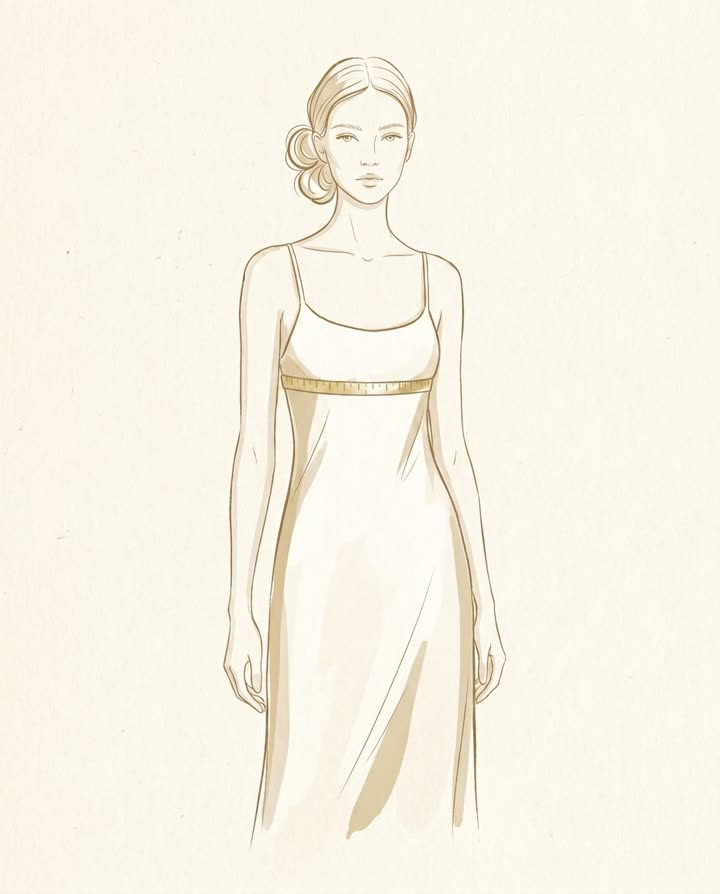
Measure around the ribcage directly beneath the bust, right where a bra band sits. Keep the tape level and snug.
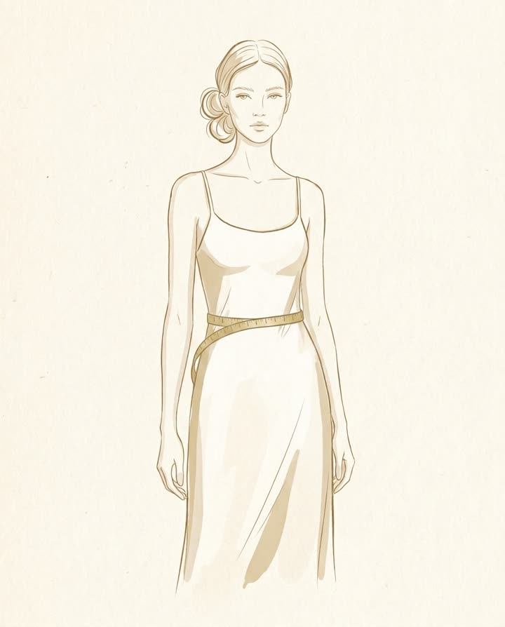
Measure around the narrowest part of your torso, usually between the ribs and the navel. Keep the tape level, with a fingertip of ease so you can breathe.
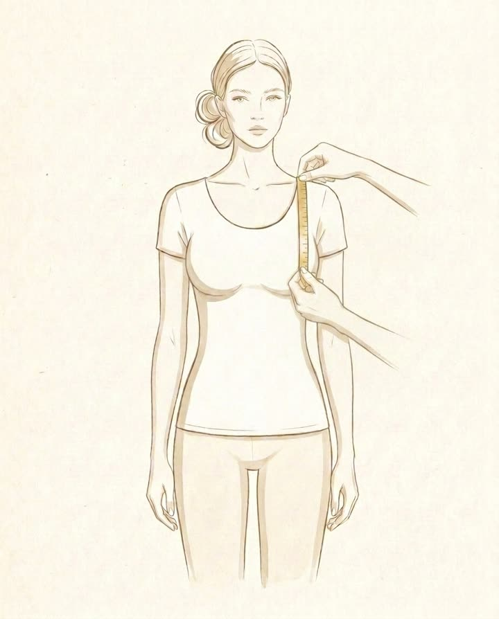
Measure from the middle of your single shoulder to your nipple. Keep the tape vertical to the floor.
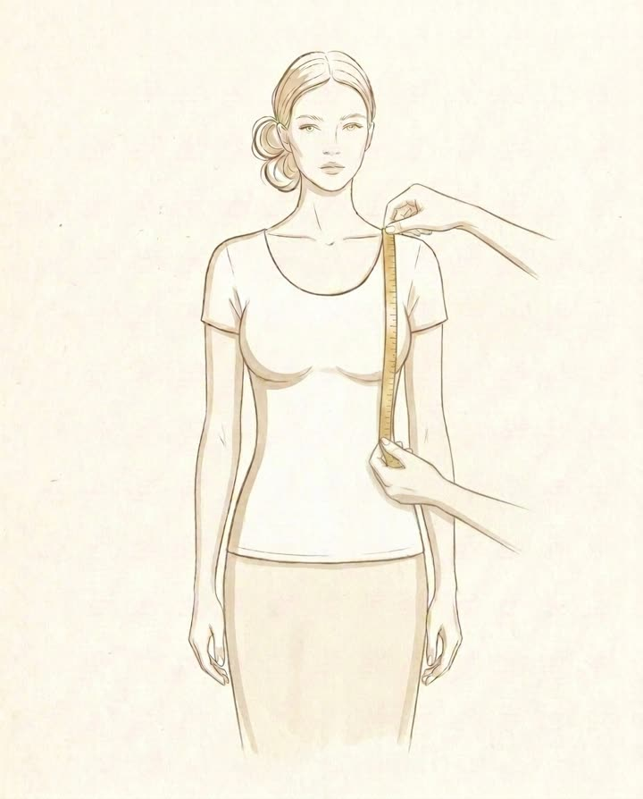
From the middle of the shoulder, run the tape down over the bust point and end at the natural waist. Keep the line vertical.
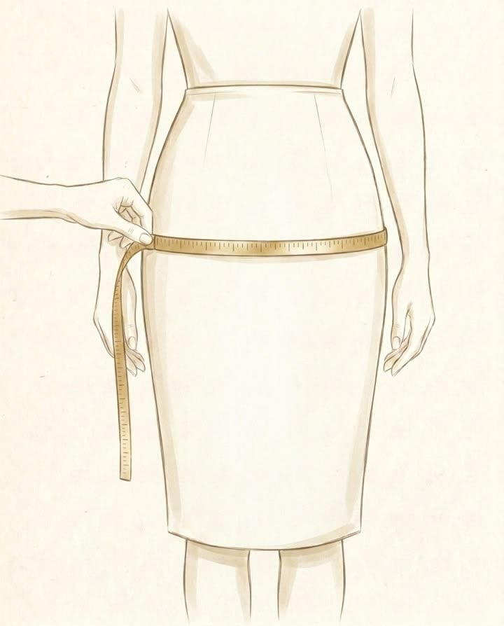
Measure around your bottoms at the fullest point. Keep the tape parallel to the floor.
Sleeves, Shoulders & High Necks
Only needed when the gown or jacket is built above the bust: high necklines, illusion panels, defined shoulders, or sleeves of any length.
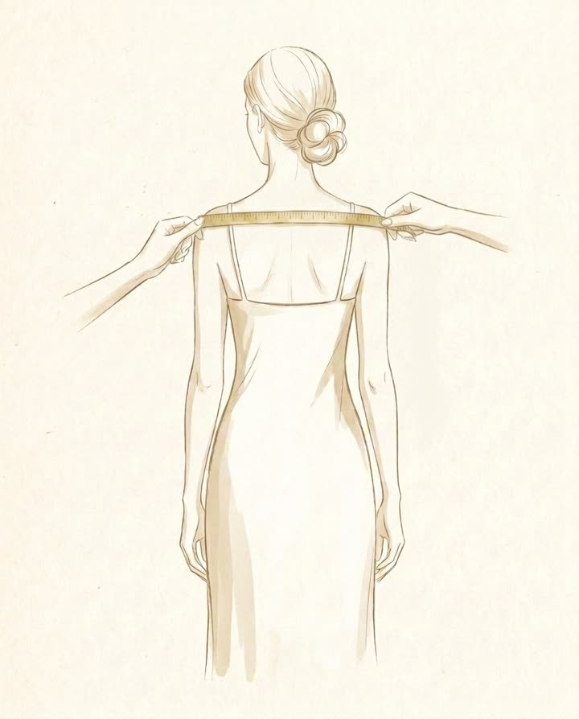
Across the back, measure from the bony point where one shoulder ends to the same point on the other side, keeping the tape straight and level.
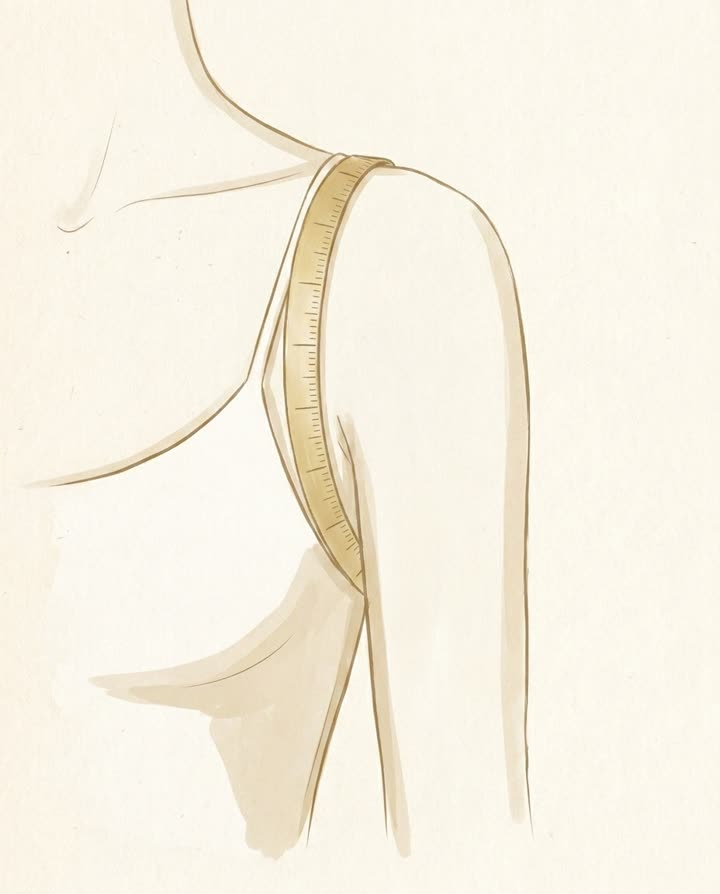
Loop the tape around one shoulder: over its top, under the armpit, and back to where you started. It should lie flat against the front and back of the shoulder.
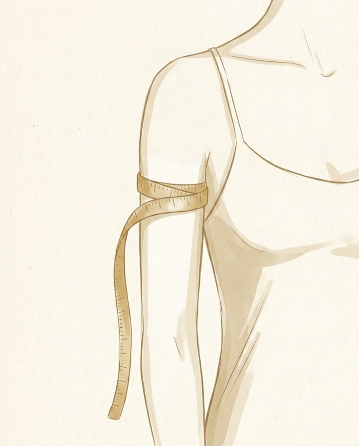
With your arm hanging relaxed at your side, measure around the fullest part of the upper arm: snug, but never digging into the skin.
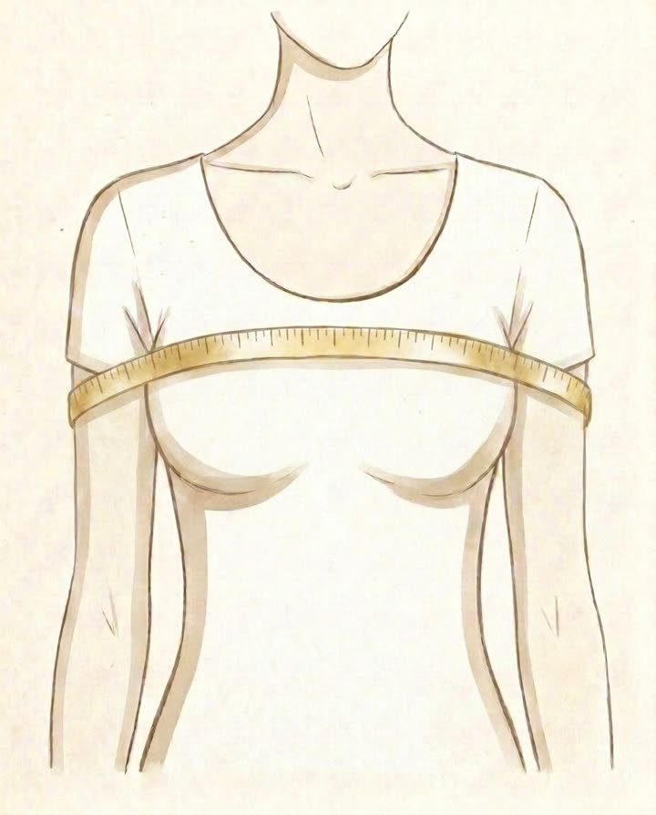
With both arms relaxed at your sides, wrap the tape around your body and both upper arms together, crossing the upper chest in front and the back behind.
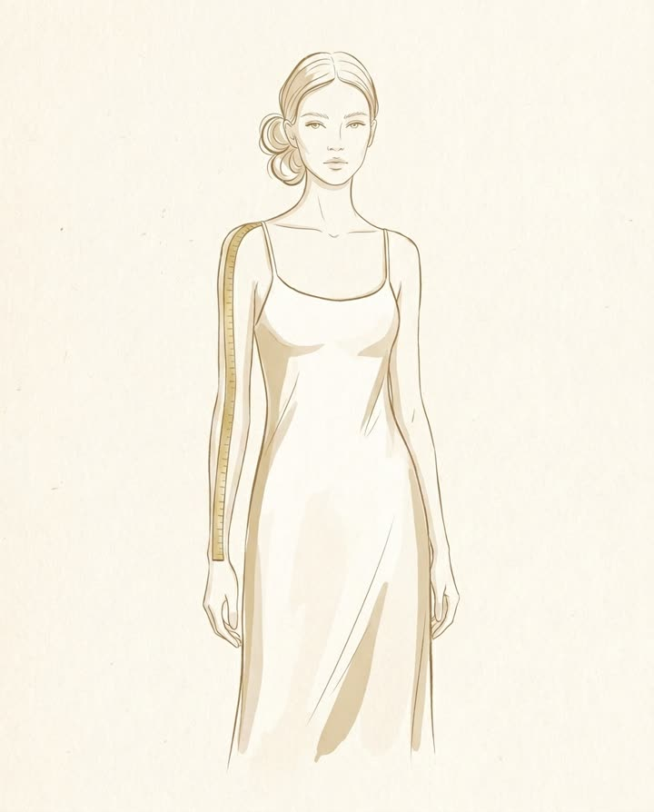
From the outer corner of the shoulder, measure down along a relaxed arm to wherever you'd like the sleeve to end.
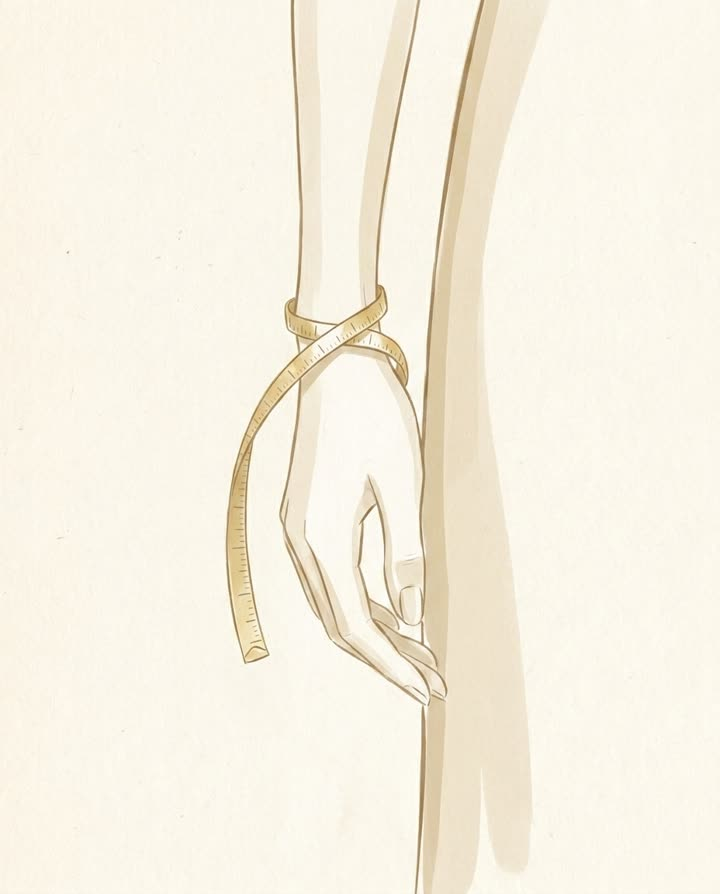
Measure around the wrist, just below the wrist bone.
For Trumpet & Mermaid Gowns
Fit-and-flare gowns live or die by where the fitted part ends. These two numbers set it.
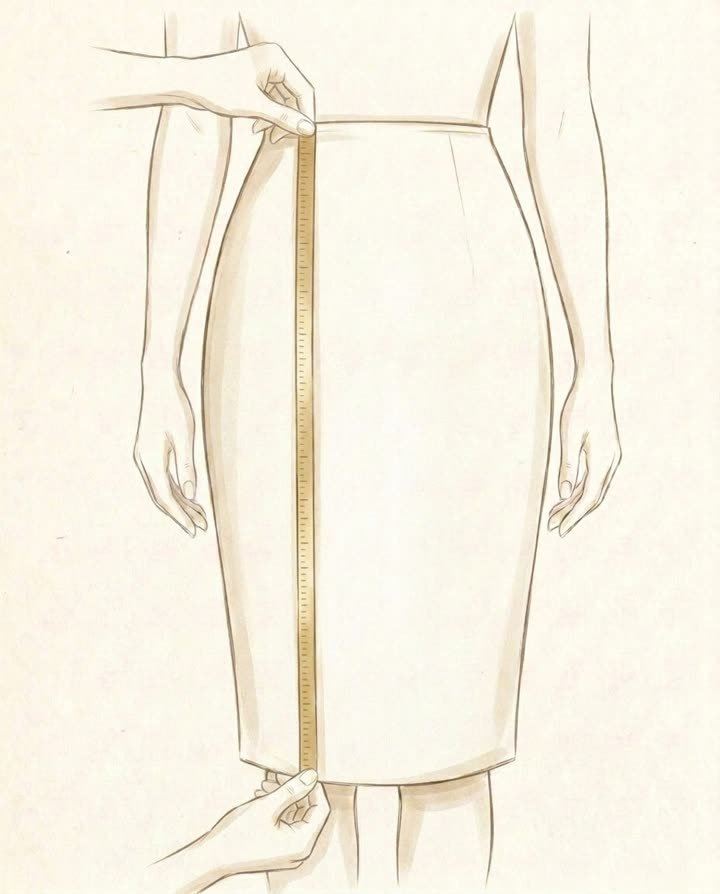
Standing straight, run the tape in a vertical line from your natural waist down to the middle of the knee.
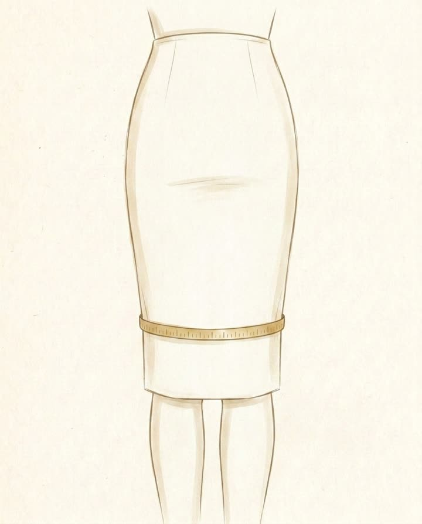
With your legs together, measure around both thighs at about five inches (13 cm) above the knees. This is where a fitted skirt holds before it flares.
Bring your measurements to a free custom-gown consultation, or text them to us with photos of a dress you love. We'll take it from there, and re-measure you properly in the studio.